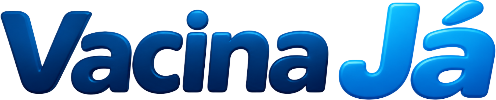

Prevenção de doenças
A vacinação reduz o risco de diversas doenças infecciosas e pode diminuir a gravidade de algumas infecções.
Conhecimento confiável ajuda a proteger você, quem você ama e toda a comunidade. Descubra como as vacinas fazem a diferença.

O Vacina Já é um projeto desenvolvido com o objetivo de informar, conscientizar e incentivar a população sobre a importância da vacinação.
O site reúne informações sobre vacinas, campanhas de imunização, o papel do Sistema Único de Saúde (SUS) e a importância de combater a desinformação e as notícias falsas relacionadas à saúde.
Nosso objetivo é apresentar conteúdos educativos de maneira simples, acessível e organizada, ajudando os visitantes a compreender como a vacinação contribui para a prevenção de doenças, a proteção individual e a saúde coletiva.
O projeto também destaca a importância das campanhas de vacinação, do trabalho realizado pelo SUS e da consulta a fontes confiáveis. Acreditamos que a informação é uma ferramenta essencial para combater o negacionismo vacinal e fortalecer a conscientização.
As vacinas treinam o sistema imunológico para reconhecer agentes causadores de doenças e ajudam a reduzir o risco de adoecimento e de complicações.
A vacinação reduz o risco de diversas doenças infecciosas e pode diminuir a gravidade de algumas infecções.
Ao receber as vacinas recomendadas, cada pessoa fortalece sua própria proteção, conforme sua idade e situação de saúde.
Quando muitas pessoas estão vacinadas, a circulação de agentes infecciosos pode diminuir, protegendo também quem não pode receber certas vacinas.
Manter a carteira de vacinação em dia ajuda a acompanhar doses, reforços e recomendações para cada fase da vida.
As recomendações podem variar conforme idade, histórico de vacinação e condições individuais. Confira o calendário oficial e converse com uma equipe de saúde.
O Sistema Único de Saúde oferece vacinação gratuita à população por meio da rede pública, incluindo unidades de saúde e ações de campanha.
Antes de compartilhar uma informação sobre saúde, confira a origem, a data e se ela é confirmada por instituições e profissionais qualificados.
Vacinas passam por etapas de pesquisa, avaliação de qualidade, segurança e eficácia antes de serem disponibilizadas. O acompanhamento continua após a aprovação.
FatoA baixa circulação de algumas doenças pode ser resultado da vacinação. A queda da cobertura pode permitir que elas voltem a circular.
FatoPopularidade não comprova veracidade. Procure a publicação original e compare a informação com fontes oficiais e científicas.
FatoEste mural reúne avisos demonstrativos e atalhos para canais oficiais. Consulte as instituições para confirmar informações e datas atualizadas.
As recomendações variam conforme idade e histórico vacinal. Confira as orientações oficiais antes de ir à unidade de saúde.
Consultar Ministério da Saúde ↗Consulte os materiais e comunicados da Anvisa para encontrar informações regulatórias e orientações sobre vacinas.
Consultar Anvisa ↗Conheça o trabalho de pesquisa, desenvolvimento e produção de vacinas realizado por instituições públicas.
Consultar Bio-Manguinhos ↗Os avisos acima são exemplos de demonstração do projeto, não representam alertas em tempo real nem anunciam novas campanhas ou mudanças recentes.
Consulte instituições reconhecidas para encontrar informações atualizadas sobre vacinação, imunização e saúde.
Orientações, calendário e campanhas nacionais.
Visitar site ↗Regulação e informações sobre produtos e vacinas.
Visitar site ↗Pesquisa, desenvolvimento e produção de imunobiológicos.
Visitar site ↗Informações e recomendações internacionais de saúde.
Visitar site ↗Acesse sua conta para continuar.
Você está conectado ao Vacina Já.
Seus dados de acesso são gerenciados pelo serviço de autenticação configurado para o projeto.